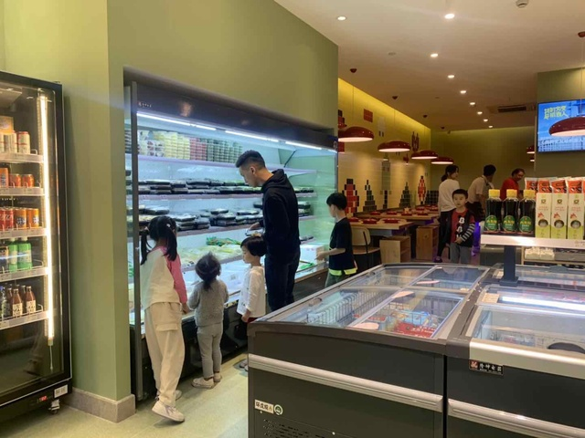

周三傍晚6时，下城区万家星城底商一家名为锅sir的火锅食材店中，几位顾客手提灰色的篮子在收银台前排队买单，篮子里装了各式各样的火锅食材，蘸酱、底料、牛肉片、毛肚、虾滑等等，简直像是打包了一顿火锅回家。
“现在天气冷了，有时候两个人懒得做饭就来买点食材回家涮火锅。”家住万家星城二期的市民赵玲儿和爱人正在选购晚餐的食材，最近1个月多月，小两口的晚餐大半都被锅sir承包。“比在店里便宜，口味也不错，有时候选好了干脆就在这里吃了。”

这家火锅食材店和普通的火锅超市不太一样，100多平米的地方被分成两个区域，靠近门口的是食材区，后面则是火锅堂食区。堂食区有十张桌子，有一大半已经有客人入座在吃火锅了。有的是一个人，有的是两个人一起用餐。
随着近年来火锅行业的爆发，火锅成为餐饮行业最佳赛道，在市场不断细分之时，以火锅食材门店为代表的衍生业态异军突起，各类火锅衍生产品也不断涌现。
抓住家庭消费核心 火锅食材店成为新风口
在火锅产业的各类衍生业态中，家庭火锅一直是关注焦点，这也掀起了一股创业新浪潮。
做投资多年的郑崇敏曾投过手游、电竞等项目，一次投资失败后，他把眼光投向火锅市场。2016年，他和朋友凑了70万，从城西一家三四十平的小门面开始了火锅创业。“我们一开始主要是通过美团和饿了么等平台做外卖火锅配送，很快就布局了100多家门店。疫情期间，生意非常好，每家店一天至少上百单。”今年下半年起，随着堂食开放，郑崇敏发现外卖火锅下滑较为严重，经过严谨的市场调研和考察，锅sir开始向火锅食材店+新零售火锅模式转变。
多年的投资经验让郑崇敏准确地踩到了风口。在火锅行业爆发的同时，产业也越来越细分化。今年4月起，主要服务“宅、忙、懒”年轻人、年轻家庭就餐需求的火锅食材门店在一二线城市异军突起。11月，火锅行业巨头海底捞也在北京开了第一家火锅食材门店。
事实上，在火锅市场主赛道几近饱和之时，火锅食材门店也成为各品牌、资本争相角逐的新赛道，以锅圈食汇为代表的几大头部企业正在快速占领市场，而三全食品、海欣食品、海天味业等知名食品公司也开始入局。
根据企查查的数据统计，在5个月的时间里，火锅食材店新增门店突破了8000家，其中，锅圈食汇在不到6个月的时间里，新增了1800家店，平均每天新开10家店。
今年5月份，懒熊火锅获得了数千万人民币融资；锅圈食汇在过去一年已获得4轮融资，总金额超过了8亿元人民币。
“火锅食材便利的市场前景还是很大的。”资深投资专家任广表示，火锅市场超市抓住了便利性和性价比两大家庭消费核心，符合当下年轻消费群体的消费习惯和需求。“一到两年后，火锅食材店的市场规模很有可能超过到店吃火锅的市场规模。”
一“锅”得道 遍地都是商机
数据显示，从2014年到2018年,火锅市场份额增长了52%,远高于其他大众餐饮品类。根据预测，2020年火锅市场规模将达到万亿级别。面对竞争日益激烈的火锅门店市场，知名火锅品牌在细分品类发力，各种火锅品牌衍生品不断涌现。
在海底捞天虹广场店，一进门就看到左右两侧各房了几个透明玻璃展示柜，摆放着各式各样“海底捞出品”的自热火锅、火锅底料、酱料、啤酒以及饰品、手提袋等一些文创产品。打开海底捞的微信商城，还有各式小零食供会员选择。
“现在门店的一些酒水饮料也是出自海底捞自己的公司。”海底捞杭州地区相关负责人周金华拿起一罐粉白配色的酸奶介绍，这是门店最受欢迎的饮品之一，“好喝又养生，很多年轻女性消费者非常喜欢。”
因为川渝火锅的麻辣属性，不少川渝火锅门店的饮品生意也水涨船高。很多火锅品牌随之衍生了自家的饮料品牌。湊湊的“大红袍奶茶”名气与其火锅不相上下，基本去吃火锅的人手一杯；杭州很土火锅品牌川味观推出的生津止渴、清热解辣的川味观凉茶，一家门店一天最多时候能卖上千罐。
除了饮品，调味品、方便速食品也成为各品牌争相角逐的赛道。近年来，海底捞关联企业颐海国际相继推出麻辣小龙虾调味料、自热小火锅、螺狮粉等。从去年起，川味观也相继推出了酸辣粉、香辣酱等衍生产品。
中国食品零售分析师朱丹蓬表示，在万亿级的市场面前，火锅行业正往全产业一体化发展，上中下游公司打通将是发展趋势。关键的问题是资金实力、资源以及落地执行，这才是决定品牌是能否成功突围的核心要素。
市场再大 也要悠着点
今天起，杭州火锅江湖系列专题也将告一段落。在准备四篇系列稿中，走访了杭州十多家十家知名火锅品牌和门店，采访每位创业者或负责人时，一直围绕着一个中心问题：火锅为什么那么火？它能一直火下去吗？
今年疫情以来，餐饮行业进行了一轮大洗牌，杭州城多个综合体的餐饮门店将近一半异主。餐饮太难了，这是很多从业者的心声。而火锅行业却从这场危机中脱颖而出。
今年下半年，很多中式餐饮品牌都在谨慎拓店，但10月份起，杭州一下子开了数十家火锅店。根据记者所掌握的信息，杭州新开业的火锅店数量远远超过其他中餐正餐新门店之和。
“火锅符合大部分老百姓的口味，在疫情没有完全消失的情况下，风险最低。”有一位投资者道破了火锅品牌不断开新店的原因。
而今年4月开始火锅食材门店爆发也不外乎也是这个原因。走进一家店，一站式采购好火锅所需食材并打包带回家，这种成本低、风险低又能切入火锅市场的生意确实是当前较佳的投资项目。

 4008-088-297
4008-088-297